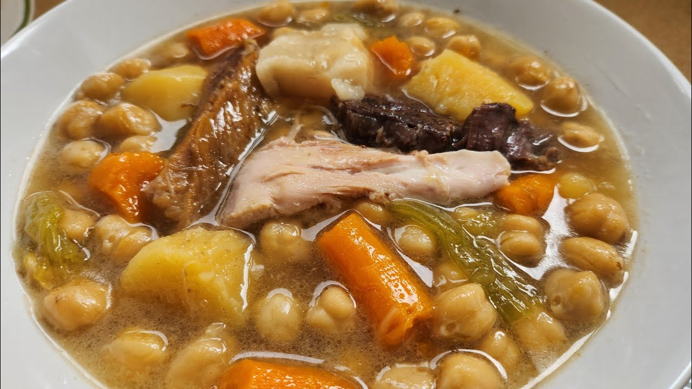

Puchero

Puchero is a traditional Spanish stew made with meat, vegetables and
chickpeas. It is often served as a main course.
Ingredients
- 500g beef shank or shin
- 500g bacon
- Half a chicken
-
"Los avíos": 1 salty bone, 1 salty rib piece, 1 iberian bacon piece, 1
ham bone
- 3 large potatoes
- 1 large onion
- 2 carrots
- 1 leek
- 1 celery stalk
- 1 turnip
- 400 g chickpeas
- olive oil
- salt
- pepper
Instructions
-
Boil and skim the meats: Place all the well-washed meats and salted
bones in a large pot with plenty of cold water. Bring to a boil over
high heat and remove all the foam and impurities from the surface with a
slotted spoon; This step guarantees a clean broth.
-
Add the legumes: Add the drained chickpeas (you can use a net to easily
retrieve them later)
-
Cooking with the vegetables: Add the cleaned vegetables (leek, celery,
turnip, carrots, and potatoes). If using a pressure cooker, close it and
cook for about 30 to 40 minutes from when steam begins to escape. If
cooking in a regular pot over low heat, you will need between 1.5 and 2
hours
-
Strain the broth and adjust the seasoning: Check the salt level (the
salted bones already add a lot). Separate the broth from the solid
ingredients
-
Serve: Serve the broth as a first course, and the meats and vegetables
as a second course. You can also serve everything together in one dish,
as is traditional in some regions.
Back to Home